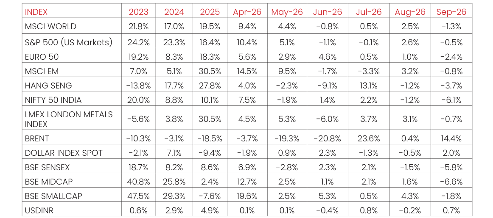

Macro and
Equity Market
Outlook
Equity Market
Outlook
GLOBAL MACRO & MARKETS
India’s NSE NIFTY 50 Index ended the month of September 2026 in red
(-6.1%). Among major global indices, the Japanese NIKKEI (+0.7%), Morgan
Stanley Capital International (MSCI) World (-1.3%), the Euro 50 (-2.40%)
and the S&P 500 (-0.5%) ended the month of September 2026 with
negative returns. Performance was mixed among Emerging Market (EM)
indices in September 2026, with the MSCI EM, Hang Seng, BOVESPA Brazil
recording returns of (-0.8%), (-3.7%), and (+5.0%) respectively.
The London Metals Exchange (LME) Metals Index was down (-0.7%) in
September 2026. West Texas Intermediate (WTI) in green MoM, by (+5.4%)
and Brent Crude positive MoM, by (+14.4%), respectively, as markets
remained cautious given geopolitical uncertainty.
The Dollar Index climbed by (+2.0%), through September 2026, with the US
Dollar (USD) is neutral vis-à-vis Emerging Market (EM) currencies (-1.5%)
and depreciating marginally against the Indian Rupee (INR) on the spot
market (+0.7%). Bond yields moved upwards, with India’s 10Y G-Sec yields
gained by 24 bps, while US 10Y G-Sec yields climbing 54 bps, and the
German Bund yield rose by 26 bps, with rates settling at 7.18%, 5.28% and
3.59%, respectively.
Domestic Macro & Markets
The BSE SENSEX decreased (-5.8%) in September 2026, in line with the NSE
NIFTY Index. The BSE Mid-cap index & the BSE Small-Cap index, falling by
(-6.6%) & (-1.8%), over the month of September 2026, respectively. All
major sectoral indices ended the month in negative territory. IT, auto and
realty indices declined the most (-11%), (-9%) and (-6%).

Net Foreign Institutional Investors (FII) flows into equities were negative
for September 2026 at (-$ 4.1 Bn), following ($2.963 Bn) in August 2026.
Domestic Institutional Investors (DIIs) remained net buyers of Indian
equities for the 38th consecutive month with flows of (+$8.0) Bn in
September 2026 compared to (+6.1Bn) in August 2026.
India's high frequency data update:
Manufacturing PMI eased to its lowest level since August 2021, while GST
collections remained robust, supported by a sharp rise in import revenue.
Core-sector output and industrial production rebounded, and credit growth
accelerated marginally. However, inflation edged higher-CPI rose to 4.82%
YoY in August from 4.45% in July, with food inflation at 5.95%- and the
merchandise trade deficit widened to $31.98 billion in July, before narrowing
to $26.86 billion in August.
Purchasing Managers’ Index Manufacturing PMI:
India's Manufacturing PMI rose to 55.1 in September 2026 from 52.8 in
August, revised down from a preliminary estimate of 55.7, but marking one of
the strongest improvements in the sector's health in seven months. New
orders increased at their fastest pace in seven months, while output growth
accelerated to a four-month high, supported by firmer demand for electronic,
food, pharmaceutical and textile products. New export orders also expanded
at a quicker pace, with stronger demand from Brazil, Europe, the UAE and the
US.
Goods and Services Tax (GST) Collection:
Gross collections of INR 1.77 Tn (+14.7 % YoY) in September 2026 the
Gross Domestic Revenue stood at Rs 1.25 lakh crore, rose (+10.1% YoY),
while Gross Import Revenue stood at Rs 0.520 lakh crore, marking a sharp
rise of (+25.9% YoY) during the month.
Core Sector Production:
The index of eight core sector industries grew moderately (+4.8% YoY) in
August 2026, against a (+5.0% YoY) growth in July 2026. The production of
Electricity, Cement and Steel recorded growth in June 2026. The
production of Cement, Electricity Iron Ore, Steel and Refinery products
recorded growth in August 2026 by (+12.5% YoY), (+11.6% YoY), (+5.5%
YoY), (+3.4% YoY), (+2.6% YoY) respectively.
Industrial Production:
Factory output growth as measured by the Index of Industrial Production
(IIP) grew YoY by (+8.0%) in August 2026, vs a growth of (+6.7%) YoY in July
2026. The growth rates of the sectors, Mining & Quarrying, Manufacturing,
Electricity & Gas Supply and Water Supply, Sewerage & Waste
Management for the month of August 2026 are (- 5.6%), (+9.0 %), (+12.3
%) and (+6.3 %) respectively.
Credit growth:
Scheduled Commercial Bank Credit growth in September 2026 increased
marginally to (+18.8 %) YoY vs (+18.3%) YoY in August 2026. Agriculture
and allied activities credit in August 2026 grew by (+17.2%) YoY, while
industrial sector credit grew by (+18.2%) YoY, the services sector credit
grew by (+24.3%) YoY.
Inflation:
For August 2026, the Consumer Price Index (CPI) inflation rate rose YoY to
(+4.82%), up from (+4.45%) in July 2026. Food inflation accelerated further
to (+5.95%) YoY, compared with (+5.52%) in July. The Wholesale Price
Index (WPI) inflation in August 2026 was at around (+9.92%) YoY,
compared with (+9.78%) YoY in July 2026. The higher inflation rate in
August 2026 was primarily driven by food prices, fuel and power, and
broad-based increases across most CPI categories; notably, onion inflation
rose sharply to 48.27% YoY, while fuel and power inflation at the
wholesale level increased to 22.93% YoY. Deflationary trends were
observed in items such as tomatoes, potatoes, and some primary articles,
although these were insufficient to offset the broader inflationary
pressure.
Trade Deficit:
Indian merchandise exports increased by (+26.1%) YoY to $43.81 billion in
August 2026, compared with $34.74 billion in August 2025. Merchandise
imports rose at a slower (+14.1%) YoY pace to $70.67 billion, versus $61.96
billion a year earlier. Consequently, India’s merchandise trade deficit
narrowed to $26.86 billion in August 2026, from around $27.2 billion in
August 2025 and $31.98 billion in July 2026.
Events in October 2026
RBI MPC (October 5–7):
The RBI’s Monetary Policy Committee meets
from October 5–7, with the repo-rate decision due on October 7 at 10:00
AM IST. Markets will watch whether the RBI holds the repo rate at 5.25% or
hikes it, amid elevated inflation and global tightening; the Governor’s press
conference at 12:00 PM may be key for liquidity and forward guidance.
Domestic Macro Data:
August CPI is due on October 12, WPI on October
14, and September IIP on October 28. These releases could shape
expectations for the inflation trajectory, industrial recovery, and RBI policy
stance.
Global Cues:
US Federal Open Market Committee (FOMC), crude oil prices, US bond
yields and major technology earnings will remain important for FII flows,
IT-sector sentiment, and Indian bond markets.
Domestic Compliance:
The tax-audit report deadline has been extended
to October 21, while the ITR deadline for tax-audit taxpayers has been
extended to November 21. Other changes effective October 1 include
revised bulk-deposit rate disclosure rules, a new UPI MDR framework for
specified transactions above Rs 2,000, and biometric Aadhaar
authentication for subsidised domestic LPG refills.
Monthly Performance for Key Indices:

Source:NIMF Research, Bloomberg, RBI
Note: Market scenarios are not reliable indicators for current or future performance. The same should not be construed as investment advice or as any research report/research recommendation.
Past performance may or may not be sustained in future.
Note: Market scenarios are not reliable indicators for current or future performance. The same should not be construed as investment advice or as any research report/research recommendation.
Past performance may or may not be sustained in future.
Market View
Global macro conditions remain volatile, with crude oil prices, interest rates,
commodities and currencies continue to remain elevated.
On the domestic front, trends remain encouraging. Consumption has
recovered following the GST rate changes, while government-led investment
remains supportive and private-sector capex continues to improve from a
relatively low base.
Corporate earnings have also shown signs of improvement, with revenue and
earnings growth moving into double digits. Q1 FY 27 quarterly results were
ahead of expectations, providing greater confidence in the earnings
recovery.
FII selling had started to moderate after significant outflows in the first seven
months, but renewed geopolitical tensions and higher crude prices may keep
foreign flows volatile. Foreign Currency Non Resident (FCNR) flows have
provided some support to the currency, though they do not address the
structural impact of higher energy costs.
Domestic liquidity remains an important support for equities, with SIP flows
continuing at healthy levels. However, a prolonged period of market
weakness could have some impact on the pace of incremental flows.
At the same time, strong primary-market activity through IPOs and offers for
sale is absorbing significant liquidity. Continued supply of new paper could
keep a lid on the pace of market recovery in the near term.
Valuations have become more reasonable following the time correction in
Indian equities, particularly in large caps. This has potentially improved the
risk-reward compared with the elevated valuations seen earlier.
Going forward, earnings growth may be an important driver of market
returns, particularly as valuations have become more reasonable and the
market navigates external uncertainties around crude oil, geopolitics and
global interest rates.
India remains vulnerable to elevated crude oil prices given its dependence on
energy imports. A sustained rise in crude could create a dual impact through
pressure on the currency as well as corporate earnings.
Overall, while near-term volatility could persist, improving domestic
earnings, resilient consumption and investment trends, healthy domestic
flows and more reasonable valuations may remain supportive. We might
remain constructive on Indian equities from a medium- to long-term
perspective.
Asset allocation in line with the risk appetite of the investor is an important tool
to navigate any unanticipated volatility. Accordingly, Large Cap & Large Cap
oriented diversified strategies along with hybrid funds might appear to be
better placed on risk-reward basis, while Mid/Small cap allocation may be
considered in a staggered manner through systematic investment with a
long-term view.
Gold & Silver Outlook
Gold and silver have both corrected from recent highs after a strong rally, but the medium to long term investment
case may remain constructive. Our view is that volatility may remain elevated at least until the year end. Higher
interest rates and bond yields may remain a headwind, while portfolio diversification, hedging demand, fiscal
concerns and tight physical markets may provide support.
For gold, the key structural development is its resilience despite higher global bond yields. Traditionally, rising real
yields have been negative for gold, but this relationship has weakened since the pandemic. One explanation is that
higher yields are increasingly reflecting higher term premiums and concerns around fiscal sustainability, rather than
only stronger growth or tighter monetary policy. With global debt continuing to rise and limited visibility on fiscal
consolidation, gold's role as an asset without direct credit risk becomes increasingly relevant.
Physical gold demand in India is currently softer, particularly in jewellery and small bars, as higher prices affect price
sensitive consumers. However, such periods have historically also created greater interest in financial gold, including
ETFs. Gold and silver ETFs remain a small part of India's much larger physical precious metals market, leaving room
for further financialisation.

Silver shares many of gold's monetary and diversification characteristics but has an additional industrial demand
component. This could make silver structurally attractive, but also more cyclical and volatile. Demand from solar,
electronics, electrification and other industrial applications potentially remains an important
long term support. At the same time, silver may potentially underperform gold during periods
of weaker global growth and typically relatively larger price swings in both directions.
From a portfolio perspective, gold could remain the core precious metals allocation because of
its diversification characteristics and relatively lower volatility. Silver may have potential to
complement gold as a higher beta exposure to both, precious metals and industrial growth.
For investors, the focus might remain on strategic allocation rather than short term market timing. Given the
likelihood that volatility remains elevated, staggered allocation might be preferable after large price moves. Based
on historical experience, a minimum investment horizon of two to three years may appropriate, with a longer
horizon for silver given its higher volatility.
Overall view
the structural case for both metals remains intact, but the path is unlikely to be smooth. Gold may
remain supported by high global debt, changing bond market dynamics and diversification demand, while silver
might benefit from the same monetary backdrop with additional support from structural industrial demand.
Note: Market scenarios are not reliable indicators for current or future performance. The same should not be construed as investment advice or as
any research report/research recommendation.
Data Source : World Gold Council, Bloomberg,^"Real Yield"="Nominal Yield"-"Expected Inflation Rate"
Past performance may or may not be sustained in future.
Data Source : World Gold Council, Bloomberg,^"Real Yield"="Nominal Yield"-"Expected Inflation Rate"
Past performance may or may not be sustained in future.
Source:
NIMF Research,Bloomberg
Disclaimer:
The current fund philosophy may change in future depending on market conditions or fund manager’s
views. The sectors mentioned are not a recommendation to buy/sell in the said sectors. The information
herein above is meant only for general reading purposes and the views being expressed only constitute
opinions and therefore cannot be considered as guidelines, recommendations or as a professional
guide for the readers. The document has been prepared on the basis of publicly available information,
internally developed data and other sources believed to be reliable. The sponsors, the Investment
Manager, the Trustee or any of their directors, employees, Associates or representatives (‘entities &
their Associate”) do not assume any responsibility for, or warrant the accuracy, completeness, adequacy
and reliability of such information.
Recipients of this information are advised to rely on their own analysis, interpretations & investigations.
Readers are also advised to seek independent professional advice in order to arrive at an informed
investment decision. Entities & the associates including persons involved in the preparation or issuance
of this material, shall not be liable in any way for any direct, indirect, special, incidental, consequential,
punitive, or exemplary damages, including on account of lost profits arising from the information
contained in this material. Recipient alone shall be fully responsible for any decision taken on the basis
of this document.